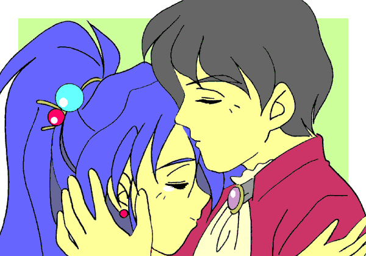

影の騎士
作：夜夢
第八話 “伝説に消えし影”
第一章：影闇は晴れぬ
「……シェアナ——さん？」
ショーネルはその場にいる人物を見つめ、そう呟くことしか出来なかった。
“影の騎士” の名を騙って王都周辺で上級騎士等を次々と殺害していた黒騎士を、ショーネルは迎え討たんとしていた。そこに現れて彼の危機を救い、そして偽りの
“影の騎士” を打ち据えた者……その者とは、本物の
“影の騎士” であった。
ショーネルは密かにその場を立ち去ろうとしていた
“影の騎士” に気付き、その後を追ってこの廃屋に来たのだった。……そして、その廃屋の扉を開いた時、彼は意外な情景を目にすることとなった。
彼が見たもの……それは、ドールにも似た甲冑の前に立つ一人の女性——シェアナの姿と、それに寄り添う有翼の少女……
ショーネルは暫し呆然として、その場に立ち尽くしていた。そして、シェアナたちもまた、余りにも予想外な事態に、ただただ呆然としている他なかった。
その止まった時は永遠とも言える程であったが、その澱みを打破したのは、新たに登場した二人の人物であった。ショーネルの入ってきた扉より突如現れたその人物とは……リュッセルとクリックであった。
リュッセルは硬直する一同を眺め、暢気な調子で若き騎士に声をかけた。
「おや、ショーネルさん。貴方もここに来てたんですね。」
「「……リュッセル！？ どうしてここに？」」
暢気な声のリュッセルに対して、ショーネルとシェアナの二人は、余りの展開に絶句するしかない。しかし、もう一人の少女ポルの態度は少し違い、青褪めた顔でシェアナの後ろで怯えている。その様子が、虚空に漂っていたシェアナの心をこの場に引き戻した。彼女は無粋な侵入者——リュッセルを睨み付ける。だが当の本人は、笑みの表情を変えずに彼女等の問いに答えた。
「いやね……クリックから少し事情を聞いて、“影の騎士”
の右腕をお持ちしたんですけどね——」
そう言うと、リュッセルは後ろに連れていたクリックを前に出す。引き出されたクリックの手には、確かに黒き鋼の腕が抱えられていた。
その腕を確認した直後、シェアナはあることに気付く。一つは、クリックやポルたちがリュッセルに対し異常に怯えているということ……そして、彼の瞳は彼女の見慣れたものではなかった。その瞳は薄闇の中で金色に煌き、その瞳の形は針の如く細まっている。
「リュッセル、それは……その眼は？」
彼の目の変化に驚き、問いを漏らすシェアナ。リュッセルはおどけた様子で彼女に言葉を返した。
「あ、これですか？ これは “竜瞳”——別名
“妖精封じの眼” と言うらしいですよ。これのお蔭で色々役に立つこともありますけどね……まぁ、それはこの際どうでも良いでしょう？」
「……そうだな。今は貴女に事情を聞きたいのですが……シェアナさん——」
リュッセルの言葉に、我に帰ったショーネルがシェアナに詰め寄る。それを興味津々と言う様子でリュッセルも見詰めている。
追い詰められる彼女を庇うように、シャーフィールが二人を威嚇する。しかし、その鋼馬の行動を制する声が上がる。
「止めろ、シャーフィールっ！ ……分かった……こうなったからには、二人には事情を——いや、真実を話すことにしよう……」
そう言うと、彼女は奥の一室に一同を促した。
そこは、廃屋の中でも比較的小奇麗に整理されたらしい場所だった。シェアナはそこに三人を招き入れ、そこにあったソファーに腰を下ろし、ポルを傍に座らせた。そして、ショーネル、リュッセル、クリックの三名は各々近くの椅子に腰を下ろした。
そして、彼女は躊躇いながら口を開いた。
「……まず、何から話そうか……貴方たちの推測通り、私が
“影の騎士” だ……そして——」
そこまで言って、口を澱ませるシェアナ。ポルは気遣わしげに彼女を見詰めた。その瞳に励まされるようにして、シェアナは言葉を紡ぐ。
「…………そして、私がシェユラス＝ロフトだ……」
「……！！」
彼女が発したその言葉に一同は驚き、目を見張った。ショーネルやリュッセルは信じられないという様子で暫し絶句する。やっとの思いで口を開けたのは、リュッセルであった。
「……クリックからは聞いてはいましたけど…………しかし、シェアナさん……貴女は、その——本当に？」
おそるおそると言った様子で発せられたリュッセルの問いに、シェアナは自嘲するように言葉を吐いた。
「あぁ、信じられないだろうが本当だ……だが、今の私は——私の身体は正真正銘、女だよ……事情があってな。」
自嘲の色を帯びた彼女の言葉に、まだ信じ切れないショーネルは咄嗟に呼び掛ける。
「……そんな……待ってくれシェアナさん……いや、シェユラス——？」
「シェアナで構わないよ、ショーネル。……信じられないのも、無理はないと思うけれどね……」
言い澱むショーネルの様子に彼女は微笑を浮かべ、彼の幼い頃や見習時代等の事を語って聞かせた。それらの幾つかは、シェユラスしか知らぬ筈の出来事も含まれている。
そんな彼女の語る言葉に、彼は納得するしかなかった。彼の内心に燻っていた意外な可能性が、事実であったと——
第二章：黒き右腕、繋ぎしは……
そうして、皆がシェアナの正体に一応の納得を示すと、彼女は微笑を浮かべて一息吐いた。
そして、彼女はこれまでの事を話した。ボルラ卿の裏切り、自身の死……そして、ファルト老の手による蘇生……
“影色の魔鎧” を貰い受け、“影の騎士”
として暗躍したこと——
「……最初は、ボルラに復讐するつもりだった。だが、奴は何者かの放っていた密偵に殺された。それからは、誰が何の為に、この私を亡き者にしたかったのかを……調べていたのだが——」
そう語る彼女を見詰めながら、ショーネルやリュッセルは
“影の騎士” の行動を思い浮かべる。その時、ショーネルが呟く。
「もしや、あの黒騎士……貴女、の語る何者かの手によるやもしれない……」
「そうだろうな……あの黒騎士——いや、あのドールを操っていた者は、ボルラを殺した奴だった……あんな密偵を放てるのは、騎士団のかなり上位の騎士だろうな……」
そう言ったシェアナの眼光に、ショーネルはかつての友の面影を見ていた。
それから数日後、ショーネルは、密かに王都への帰還を果たしていた。その彼と伴に、一人の吟遊詩人と一騎の人影が王都を訪れていた。
その夜、魔導技術師団々長ジョーナル＝ミッドリールは、遠縁であり、友人でもあるショーネルの訪問を受けた。その際、彼の屋敷に内密での訪問を依頼されたのだった。
ジョーナルは訝しく思いながらも、ショーネルの私邸内にある倉庫の一つへと足を運んだ。
そこで彼を待っていたのは、一機の魔導機械であった。その機体とは、漆黒の甲冑ともドールとも見える機体——しかし、その右腕の関節部は大破し、内部の配管等が露出している。その機体を前に、ジョーナルは言葉を失う。
「……ショーネル、これは一体……何処で手に入れたんですか！？」
「そのことは後で話す。ジョーナル、これの修復はどれ位で出来る？」
驚くジョーナルを半ば無視する様に、ショーネルはその機体の右下腕部を差し出しつつ尋ねた。ジョーナルは手渡された腕を手に取り、暫くしてから、呆然とした様子で答えを返した。
「……関節部の様子を見るに、手持ちのドールの部品と互換性があるようですし、恐らくは数日中には出来ると思います。……ところで、これを何処で手に入れたんです？ これは
“強化甲冑” ——それも診たところ、かなり優れた機能を持つ機種ですよ。こんな物、“アティスの後継”
を自称するセンタサイト王国でもあるかどうか…………まさか！？」
「そう、そのまさかさ……恐らくな。」
若き魔導技師の叫びに、若き騎士は答える。その言葉を聞き、魔導技師はかなりの躊躇いの時を置いた後、おずおずとした様子で自身の予想するものの名を口する。
「……これが、“影の騎士” ？」
「その通り。……意外と気付くのが遅かったな。」
躊躇いを見せつつ答えた魔導技師に向け、騎士は呟くように答えた。その言葉に、ジョーナルはいまだ信じきれない……といった様子で呟きを漏らす。
「確かに、この間のチュザーラ卿襲撃事件は、こちらでも黒騎士の検査等で、報告は耳にしているけれど——」
呆然として漆黒の魔法機械と友人とを交互に見やるジョーナルに、ショーネルは改まった様子で彼を見詰め、そして言った。
「ジョーナル、この事について秘密を守ると約束してくれ……これを見せた上で、言うことでもないがな……」
「……わざわざこれを見せてから、そんなことを言うとは……信頼されていると言うことなんでしょうかね……。良いですよ。これは口外致しません——これで良いんですか？」
真剣な様子のショーネルの視線に、何処か憮然とした様子で溜息を吐き、ジョーナルは答えを返し、そして彼に誓って見せた。
ショーネルに口外しないとの誓いを口にした後、ジョーナルは倉庫を軽く一瞥しながらショーネルに向け、言葉を続けた。
「……では、ここに転移用の魔法陣を設置して置きます。その方が、色々と都合が良いでしょうから——」
そう言ってから、彼は携帯していた石墨で、転移の為であろう魔方陣を倉庫の片隅に描き始めた。
それから更に数日が経過した。その間、ジョーナルは密かにショーネルの屋敷に訪れていた。彼はここ数日に渡り、夜更けにショーネルの屋敷を訪れ、“影色の魔鎧”
の修復を行った。幸い、“魔鎧” の損傷は、彼の手持ちのドール用交換部品で事足りそうであった。……そして、その合間に
“魔鎧” の機構を調べもしていた。
そうして、“魔鎧” の修復の目途も立って来た頃、ジョーナルはショーネルに私邸の一室に案内された。その部屋には、ショーネルの伯父であり上官であるドレイル老が待っていた。
「……ドレイル様！？ どうしてここに？」
「ショーネルに相談したいことがあると言われてな。……お前こそ、どうしてここに？」
ドレイル老の存在に驚いたジョーナルであったが、老もまたジョーナルの存在に驚きを見せていた。老の言葉に幾らか落ち着きを取り戻したジョーナルはドレイル老に言葉を返す。
「多分、その相談したことに関連したことで、訪れていたもので——」
「……何のことだ、先の黒騎士が倒された後、ショーネルが私邸に何か運び入れたことは聞いていたが……」
「実は…………」
老騎士の問いに、ジョーナルは声を顰めて答える。
ドレイル老とジョーナルが話し合っていた時、その場にショーネルが入室して来た。その時、彼は一人の見知らぬ女性を連れていた。二人は、彼女が誰かと訝しむ。
そんな二人に、ショーネルは彼女を紹介した。彼女——シェアナのことを……それは、彼女が
“影の騎士” 当人である、と——
この紹介は、二人を大いに驚かせた。そして、彼女こそがシェユラスの変り果てた姿であるとの言葉に、二人は暫しの間、絶句したままシェアナを凝視するしか出来なかった。
「…………」
ショーネルとシェアナは彼等の向かい側の椅子に腰掛けた。
「……お久しぶりです……お二人とも——」
絶句する二人に向け、その女性——シェアナは言葉をかけた。その言葉に、ドレイル老は彼女に向けて問いの言葉を紡ぐ。
「……本当に、シェユラス……なのか？」
「…………」
「えぇ、伯父上」
戸惑いを見せるドレイルの問いに、言い澱むシェアナ。彼女を助けるように、ショーネルが答えた。
そして暫しの間、彼女とショーネルの言葉を尽くした説明と、シェアナの姿や仕草の中にかつてのシェユラスの面影を見て取った彼等は、次第に彼女の正体について納得し始めたのだった。
そして、彼女が辿った軌跡を、ショーネルが徐々に語っていくにつれ、二人の顔も次第に険しいものへと変わる。……そして、話が終わった時、ドレイルが口を開いた。
「お嬢さん……いや、シェユラス……それは、本当かな？」
老将の問いに、シェアナは暫しの逡巡の後、頷く。老将は深々と頷きながら、彼女を労わりの言葉をかけた。
「そうか、それは、大変であったな……」
「……そうですか、あの “魔鎧” を診ていて、シェユラス卿の物とも思えなかったのですが……そう言うことなら——」
続いて、ジョーナルも戸惑いつつも納得してきたようだ。彼は
“魔鎧” と言う証左を見ているが故に、納得出来たのであろう。
そして、ドレイル老とジョーナルはシェアナの目的を聞いた……彼女を陥れようとしている者の正体を突き止めると言う目的を。……それを聞いた二人の脳裏に、一人の人物が浮かんだ。
その人物は、騎士たちを指揮する立場にあり、若き英雄となりつつあったシェユラス＝ロフトの台頭に地位を脅かされると怖れ、“影の騎士”
の行動に一番過激に反応していた人物……即ち——
（（……クルレム＝シェイン……））
しかし、その名を口にするのは憚られた。はっきりとした確証に乏しかったからでもある。
しかし、口には出さずとも、表情の変わった彼等に何かあると感じたシェアナは、二人に問いかける。
「ドレイル閣下、ジョーナル卿、何か知っておられるのですか！？」
「……えっ！？ そ……それは——」
「それは今は言えぬ。……我等とて、確証無き者を陥れるようなことは、言いたくはない……」
シェアナが察して出した問いは、若き魔導技師を狼狽させたところで、老将の言葉によって遮られた。
しかし、彼等も彼女に協力することを確約し、その夜は暮れていった。
そしてその翌々日、シェアナの元にジョーナルが駆け込んできた。そして、その第一声はシェアナに向けかけられた。
「シェアナさん！ あのドールの機種が判明しました！！ ……あの機体のナンバーは、DB-Hmn-5-fd54型ですっ！」
熱く語るジョーナルの反応とは裏腹に、きょとんとした様子でシェアナは尋ねる。
「あ、あの、ジョーナル卿……それは、どう言うこと……？」
そう戸惑う彼女の反応に、ジョーナルも落ち着きを取り戻し、先の言葉を補足する説明を語り出した。
「あっ、失礼しました。シェアナさんも御存知でしょう？ 王国で発掘された魔法機械は、魔導技術師団が全て把握しています。それで、あの黒騎士に扮していたドールの機種が、今日解明出来たんです。」
「それで……？」
「このナンバーは、王国に登録されていました。しかも、この機種は数も稀少な純戦闘用のドールの一種で、王国の保有も僅か数体で、その他の所有者もかなり限られています。しかも、この内の一つは騎士に下賜されています……その下賜された騎士と言うのが、実は、クルレム＝シェイン閣下なのです。」
その言葉に、シェアナは彼等の先日見せた逡巡の訳を察した。そんな彼女の様子を察しながらも、ジョーナルは言葉を続ける。
「ですが……これだけではクルレム卿が貴女の探す人物との確証とは言えません。……少ないとは言え、この型のドールは他にもいる訳ですし……もう少し証拠を固めないと駄目かも知れません。」
「そうですね……」
二人の悩み込んだ様子を見て、部屋の片隅で聞いていた少女は密かにある決意を固めていた。
第三章：もう一人の影の活躍
それから一日経った夜半も過ぎ、王城の上空を過ぎる影があった。その影は城の様子を暫し窺いながら、人々の監視の薄い窓に取り付き、隙を見て城内へと忍び込んだ。
忍び込んだ部屋に、人気が無いことを確認して、ポル＝ポリーはフゥと一息ついた。その背後より、姿無き声がかかる。
「ポル嬢ちゃん、これからが大変だよ……」
その声に少女は振り返り、素早く石墨を走らせた文字の書かれた石版を、声を発した者に突き付ける。
−解ってるよっ！ クリック小父さん。−
この有翼の少女は、先日のシェアナたちの会話を聞き、密かに王都の下町に宿を取っていたクリックを訪ねた。彼女の頼みに、クリックはそれとなくショーネル等から城内の間取りを聞き出した。
そうして彼女等は、この夜半に城内にあるクルレム卿の私室への侵入を試みたのだった。
誰もいない部屋でクリックは、一旦自らに掛けた
“姿隠し” を解き、彼女と共に王城の間取りを確認した。そして、廊下に人の気配が無い事を確かめ、再び
“姿隠し”の魔法を掛けると、二人は扉を開いた。
二人は、王城の入り組んだ廊下に戸惑いながらも、どうにか上級騎士たちの私室区画へと辿り着く。
「さて、どの部屋がクルレム卿の私室なのか……」
ここまで来たクリックは、もう一度王城の間取りを再確認しようと、廊下の隅に潜みながら呟いた。考え事をする時に身を潜めたのは、集中を失うと効果が消える
“姿隠し” の予防策でもある。これは、精霊魔法の使い手にして密偵たる彼の習い性だったが、そういった心得はポル＝ポリーには乏しかった。
廊下の中央で、同様の事を思い悩んでいた彼女は、不覚にも
“姿隠し” が解けてしまう……人気の無い廊下とは言え、その薄暗い翼を曝すことになったのだった。
次の瞬間、少女は殺気を感じて飛び退る。彼女の傍、髪一筋程の間をおいて、刃風が通り過ぎる。
「……！！」
刃風の先を見据えるポルの視界には、壮年の精悍な騎士の姿があった。彼の騎士は、振り下ろした剣をゆっくりと上段に構え直す。
その間、彼女は微動だに出来ずにいた……騎士の殺気の圧力と隙の無さに圧倒されていたのだ。怯えを堪える少女に向け、騎士が問いを発する。
「そなたが、“影の騎士” に仕えているという妖魔かな？」
ポルは思わず身構える。その様子を見、騎士は上段に構えた剣を無造作に下ろした。
「その様子では、図星か……私やクルレムの部屋でも調べに来たか？ まぁよい、クルレムの部屋はその先を進んだ三つ目の部屋だ。鍵は、そこに潜んでいる者にでも頼むがよかろうしな——」
そう言うと騎士は彼女の脇を通り過ぎ、クルレムの部屋の更に奥にある大きな扉の部屋へと消えていった。
急に感じていた圧迫が消え、ポルは腰砕けに座り込んだ。そんな彼女の傍らに、姿を消したまま気配が近づき、呟きを漏らした。
「……あの剣の腕……多分、フォーサイトの大将軍、フォルタス＝ゲルシュトルム。……フォーサイト一の剣の腕って聞いたけど、僕のことまで御見通しとは、いやはや……」
そう言いながらポルを立たせたクリックは、フォルタス卿の示した部屋へと彼女の手を引いていった。クリックは既に姿を消すのを諦め、術を解いて扉の様子を窺い、軽く小鉤を鍵穴に差し込むと、瞬く間に錠を開ける。
二人の妖精は、クルレムの私室に入った。そこは、貴族趣味の豪奢な造りの部屋だった、それは彼の尊大さの表れだったのかもしれない。
「……さて、どれだけの収穫があるかな？」
そのクリックの呟きとともに、部屋の捜索が始まった。
暫しの時が過ぎた後、クルレムの部屋にぼやきにも似た呟きが漏れる。
「ん〜〜やっぱり、こんな王城の一室に密書の類なんか置いておかないよな。普通……」
暫くクルレムの部屋を物色していた二人だが、残念ながら、未だ目ぼしいものは見付けだせずにいる。巡回の衛視等が来るまでに、と彼女たちに焦りの色が帯び始める。
「……みぃ！」
その時、ポルは書棚に無造作に置かれた一通の封書を見付け、声をあげた。
「どうした？ ポル嬢…………こ、これは……っ」
ポルから封書を受け取り、その内容を流し読んだクリックの顔が愕然としたものに変わっていく。……その書面に書かれていたのは、驚くべき内容であった。
しかし、そのことに驚く間も有らばこそ、二人は背後からの誰何の叫びを聞くとこととなる。
「だ、誰だ！？」
振り向く彼女等の目には、数名の衛視が扉の向こうに立っている姿が映った。
「……ゲッ、まずい……っ！」
ポルとクリックは、反射的に扉と反対側の窓へと足を掛ける。その様子に、部屋の外にいた衛視は、声を上げて部屋に駆け込む。
「待て！」
その掛け声に構わず、二人の風の妖精は外に飛び出そうとする。そうはさせじと、衛視たちは部屋を駆けた……が、二人の逃亡を阻止することは適わなかった。
「「……うわっ！？」」
彼女たちの足を掴もうとした衛視たちの手は、突如起こった微かな地震に足を取られ、空を切る。その間に、ポルたちは夜の闇の中へと消えていったのだった。
その頃、王城外壁近くにある路地の片隅で、黒鱗の老婆が大きく息を吐いた。
「お婆様……ご苦労さま。」
「……ふぅ……鱗の色も褪せたこの婆に、こんな大きな御力を振るわせるとはねぇ——」
黒鱗のお婆は、傍に立つ青年に少々揶揄めいた呟きを漏らす。青年——リュッセルはそれを聞き、暫し困った顔をしてから笑みを浮かべた。
「ハハハ……でも、流石は、お婆……伊達に竜戦士の号を貰ってないね。」
「ふぅ……まぁ、妾もあのお嬢さんを、気に入ってしまったからねぇ……」
青年の賛辞に、老婆は別の呟きを漏らした。
“闇” と “大地” の力を司る黒竜王の眷属である黒鱗のお婆は、王城に忍び入ってから、衛視達に追われて窓へ逃げるまでの妖精たちを
“見詰め”、折を見て、その逃走に密かに尽力したのである。
「さて……この先、どうなされるのかねぇ……」
「それは、僕がちゃんと見届けてみせるさ。」
逃れた二人を “見詰め” つつ呟いた老婆の言葉に、リュッセルが請合った。
第四章：王城は鎮まる事無く
一方、王城での騒ぎはまだ鎮まる気配も見せずにいる。
「逃がすな！ 追えっ！！」
「我々では無理だ！ 城壁の者に連絡を出せっ！」
「構うか！ 我等も追うぞっ！」
窓の外に消えた風妖を追わんと騒ぎ立てる衛視たちに、近くの大扉が開き、一喝が降ってきた。
「何事かっ！？ 騒がしいっ！！」
その一喝に喧喧諤諤と言い合っていた衛視達は、揃って畏まり、一喝を発した人物に事の次第を報告し始めた。
「フォルタス閣下！ 実は、クルレム閣下の私室に侵入者を発見したのですが、窓から飛び去られてしまい——」
衛視の報告の途中で、その人物——フォルタスは声を発する。
「何をしている！ ならば、空戦騎士駐屯所へ連絡に駆けんか！ 空戦騎士の航空機動力なら間に合うかもしれんだろうが！」
「「……ハ、ハッ！」」
フォルタスの一喝に打たれて、衛視たちは階下へと駆けて行く。駆け去る彼等を見詰め、フォルタスは心の内で呟く。
（あの二人に追い付くのは……無理だろうな…………さて、これでどう動くつもりだ？ ドレイル老、ショーネル……そして、シェユラスよ——）
そう、彼は知っていた。クルレムが自身の栄達の為に策を弄していることも、セクサイトの密偵の生き残りのが本国に齎した話も、ショーネルが最近ジョーナルに何かの魔法機械の修復をさせていたことも、ドレイル老やジョーナルが何か嗅ぎ回っているらしいことも……
しかし、彼にはこれに介入する気は無い。彼には西方の脅威、アティス大陸最強国の誉れ高いセンタサイトよりの防衛策に腐心せねばならないのだから。……しかし、自国が不安定になっては彼の策も危うくなる。故にこそ、彼は密かに願っている……この
“影の騎士” を巡る事件が終焉を迎えてくれることを——
突如の地震と、王城での喧騒は、当然のことながら、城の主たる国王トラムにも知れた。
王城に賊の侵入を許したとの言葉に、彼の心にも緊張が漲る。王城に賊が入ったと言えば、その狙いはまず間違いなく国王等の要人の暗殺か、魔法機械類の奪取と言うのが相場だからだ。
そこに、王の寝室に入室を望む者があった……フォルタスである。
「陛下、ご心配なく……賊の狙いは陛下ではありませんし、もう王城から去りました。」
入室を果した彼は、若き王に進言した。その言葉に王は問いかけを返す。
「フォルタス、では賊の狙いは何だったのだ？」
「……あの者たちは恐らく、“影の騎士” の手の者です。おそらくシェユラス卿の死の真相を調べに来たのだと思われます」
トラム王の問いかけに答えたフォルタスの言葉に、王は驚きの声を上げる。
「死の真相……だと？」
「これ以上は、臣の口からは……」
王城の中で、その一室にだけ、暫しの沈黙が訪れた……
「衛視どもは何をしておったのだ！？」
夜半に急を知らせられたクルレムは、その報告にその機嫌を更に悪化させる。
「で、ですが……フォルタス閣下に、集中したいからと周囲の巡回を遅らせるように仰せつかりまして……その際の出来事で——」
「解った、もう良い！」
クルレムは、報告に来た若い騎士を追い返し、舌打ちした。そして、杯の酒を空けたが、苦い味しかしなかった。
そして翌朝、彼が王城に出仕した時、彼の表情は凍り付くことになる。
さて、時は微かに遡り、ショーネルの屋敷へ密かに帰り着いたポルとクリックは……シェアナに叱られていた。
二人の侵入騒ぎは、逸早く彼女たちに知らされていたのだ……リュッセルの一報によって。……彼は王城の急使がショーネルたちの屋敷に来るより前に、王城での顛末をかなり正確に語って見せたのだった。当然、シェアナたちは、その後に王城警護の兵や騎士たちに二人が捕らえられてはいないか、と心配していたのだ。
そうした中でのポルたちの帰還は、一種の安堵感を伴って迎えられたのだった。……だが、彼女の持ち帰った封書の内容を読んだ一同の間に緊張が走る。
その封書は一つの念書であった……そこには、「シェユラス暗殺と引き換えに上級騎士職を与える」との内容があった。それはクルレム卿が、シェユラスの副官ボルラに宛てた密書に間違いなかった。
「……こ、これは——」
密書を一読した後、シェアナは言葉を失っていた。それは彼女が探していた物であり、彼等が探していた物である。
「これで、クルレム卿がシェユラス卿暗殺を示唆したのは間違いなさそうですね……」
一同の沈黙が流れる中、そう呟いたジョーナルの言葉は、否が応にも響き渡った。
第五章：影、王城に立つ
翌朝となっても、城内の混乱は余り収拾されたものにはなっていなかった。それは、賊の追跡と、その前後処理に意外に多くの者が梃子摺っていたことを示していたろう。
その混乱に乗じて、“彼等” は城内にある “もの”
を運び込むことに成功していた。
その頃、クルレムは自身の迂闊さを呪いながら、その日の御前会議に出席した。
彼の荒らされた王城の部屋より、密偵に命じて密かに回収していたボルラへの密書が紛失していた。だが、これを口にする訳には行かない。それは、ひいては身の破滅を導くやも知れないだけに……
その内心は知らずとも、鉄騎騎団団長の不機嫌な雰囲気を察し、周囲の者は彼を避けて通っていた。
その日の御前会議は、昨夜の賊侵入の件についての議題を行っている。
それは最初、ある意味茶番と言えたのかも知れない。会議序盤、その場にいる高位の文武官は、断片的ながらも事情を知っているに関わらず、その事を口に出さずにいた……それは、事情を知らぬ衛兵や官吏たちを安堵のさせる方便だったのだろう。衛兵たちが事の顛末を語り、幾人かが確認の質問を投げ掛ける……会議は定型的な手順を踏んで進行して行く。
衛兵の巡回の目を潜って王城に侵入した曲者たちは、高位武官の私室として用意された区画へ侵入、そのうちの鉄騎騎団長の部屋へと入り、室内を荒らしていた所を衛兵に目撃された。衛兵は捕縛を試みたが、その時突発した地震と曲者が窓から飛び去った為もあって失敗する。その為、宿直の空戦騎士に応援を要請し、曲者たちの追跡を依頼するも、発見することは叶わなかったらしい。もっとも、彼等が風の妖精族であるらしいので、彼らを恐れた空戦騎士たちの足が鈍っていた、という見方も出来そうだが……
報告は澱みなく進み、ある一つの確認事項の時になった。それを問う為に、ドレイルはクルレムに問うた。
「……さて、賊は一巻の書簡を持ち去ったとあるが、その書簡とは一体、何が書かれていた物なのかな？」
その問いに、クルレムの顔が一瞬引きつる……が、一瞬のことだ。
「それを親衛騎士団の貴方に話す必要は無い、これは鉄騎騎団の問題だ！」
やや強気に問いを振り退けたクルレムに、今度は違う質問者が現れた……フォルタスである。
「だが……それは、私や国王陛下にも話せぬことかなのか？」
「……そ、それは……いえ……、そのような……訳……では……」
言い澱むクルレムの様子から、宰相のオーボル老は親衛騎士団の者や下級騎士・官吏等を下がらせる。彼等が去ったことを確かめた後、老は再び問うた。
「どうじゃ、この場におる者なら幾らかなりと信が置けよう、話して貰えるかな……？」
「……あれは個人的な物、陛下や閣下に聞かせるような内容の物では——」
「では、差し障りが無ければ話して構うまいが？」
ドレイルの言葉が、言い澱む彼に突き刺さる。
「ぐっ……」
彼、クルレム＝シェインは追い詰められていた。少なくとも、彼はそう感じていた。ドレイルの執拗な追及に、王を始めとして周囲の者たちが一斉に追究の目を向けている。これでは、部下の暗殺を命じた密書の事の存在を隠し通すのは難しい——クルレムの額に冷たい物が流れた。
鉄騎騎団長の緊張が最高潮を迎える寸前に、親衛騎士団の老将は王の方を振り返る。
「……ところで陛下、この件に関し、ここにいる皆に逢わせたい者がおります。」
先程までとは打って変わった老将の言葉に、一同が彼に目を向ける。その場の意を代弁するように若き王は、老将に問いかけを発した。
「それは……何者か？」
その王の言葉から、老は諾の色を察して、ジョーナルに合図を送った。
ジョーナルは静かに杖を振り、短く古代語を唱えた。すると、謁見の間の窓と言う窓が閉ざされる。……そして、謁見の間は、予備の明かりにと灯されていた数十本の蝋燭の明かりを残して、薄闇に包まれた。
そして、闇の中より、周囲の薄闇よりなお暗い一人の影が姿を現す。その人物を指し示し、老将は言葉を紡いだ。
「始めてまみえる者も多いので、紹介しておこう……この者が、“影の騎士”
だ。」
その老将の言葉に、一同が息を呑んだ。
闇に融ける様にして浮かぶ漆黒の巨躯、闇の中に爛々と光る真紅の瞳——それは確かに、見る者に幽鬼を連想させるにたる異形の騎士であった。
息を呑む一同を意にも返さず、“影の騎士”
は謁見の間の中央へ進み、王の前で跪く。
「市井の者たちに、“影の騎士” と呼ばれている者に御座います。本日、故あって陛下の前に推参致しました。」
そのくぐもった声は、人ならぬ妖の声とも、騎士シェユラスの声とも聞こえた。
「うむ……先の戦では、世の命を救ってくれたな。礼を言うぞ。……で、推参の理由とは何か？」
“影の騎士” の言葉を受け、若きトラム王は、やや引き攣った気配はありつつも、鷹揚に声をかける。その言葉に、畏まっていた
“影の騎士” が立ち上がり、鉄騎騎団長を指差し、弾劾を始める。
「ここにおられる。鉄騎騎団団長クルレム卿に、私——いや、シェユラス＝ロフトの死の真相についてお尋ねしたいことがある。卿が私の……シェユラスの死を示唆した、その訳を——」
その言葉に、場に立つ多くの文武官達が色めき立つ……シェユラスの死が単なる戦死でなく、謀殺であった……しかも、それを指図したのが直属の上官たる鉄騎騎団長だとは……！
「……な、何を馬鹿な！ 証拠……証拠があるというのかっ！？」
城内の騒然とした空気を吹き飛ばさんばかりにクルレムは激昂した……が、彼は自らの言葉に声を喪う。
「証拠ならここにある。……昨夜、貴方の部屋で見付けられた物だ。」
そう言って、“影の騎士” は何処より書状を取り出し、その書状を読み始めた。朗々と響くその書の内容——シェユラス暗殺にかかる密約——に、多くの者達が声を失う……勿論、クルレム自身も……
そして、騎士はその書状を近くに立っていたジョーナルに渡した。魔導技術師団の長は、その書を一読してオーボル老に、老宰相は国王にその書を渡す。
「……確かに、この書の書名はクルレムの物に間違いない——」
「に、贋物だ！ ……そんな物……知らんぞっ！」
愕然とした王の呟きを聞き、狼狽慌しくもそう呟いたクルレムの言葉は、むしろその書状の信憑性を高める結果に終わった。場内に満ちた不信の目が、彼に突き刺さる。
「……クルレム卿……いや、クルレム！ ……訳を聞かせて貰おう。何故、シェユラスを殺めよと命じたのかを……そして、あの黒いドールを使い、私を騙って殺戮を繰り返した訳を！！」
「う、うるさいっ！！！！」
詰め寄る “影の騎士” に、恐慌をきたしたクルレムはその身に佩く剣を抜き、斬りかかった。しかし、鋼の擦り合う鈍い音と共に、クルレムの動きが止まる。“影の騎士”
が彼の剣を掴み取ったのだ。その紅き妖瞳が、彼を睥睨する。
不気味なその紅瞳に睥睨され、クルレムは狂ったように言葉を漏らし始めた。
「……フフフ……目障りだったのだ！ その若さで武勲を立てるお前が！ 団長や王にすら注目された貴様が！ ……貴様は家柄も、階位も、戦歴も、私の下だと言うのに！！ ……だから、貶めてやるのだ。貴様を貴様の仲間を……！！ …………ハハハハハハハハハ——」
うめくように呪うように紡がれるその言葉に、“影の騎士”
の腕が腰にかかる。
「…………そんな、そんなことの為に……私は……ボルラは……そして多くの騎士たちが殺されたとでも言うのかっ！」
その声を発した刹那、クルレムの右腕は宙に舞った。傍らには、血塗られた魔剣を手にする
“影の騎士” の姿があった。
「陛下、御前での無礼をお許し戴きたい……」
苦悶を挙げるクルレムを背に “影の騎士” は、王に向け拝跪した。
「……“影の騎士” よ。そなたは、やはり、シェユラス＝ロフトなのか——？」
「恐れながら陛下、シェユラス＝ロフトは死んだのです。今の私は、ただの幽鬼に過ぎません……」
拝跪する “影の騎士” に、トラム王は問いかけた。しかし、騎士が返した答えは、王の望むものではなかった。
「……では、“影の騎士” よ。其方を我が騎士としよう——」
「陛下、先程も申しました。私はただの幽鬼に過ぎません。」
「そうか……」
頑なな “影の騎士” の言葉に、王は諦めの呟きを漏らした。そこに、“影の騎士”
からの言葉がかけられる。
「ですが、私はフォーサイトに忠誠を誓っております……では、陛下、失礼致します。」
その後、どうなったかをはっきりと覚えている者は少ない……気が付くと謁見の間は元の明るさを取り戻しており、その場に
“影の騎士” の姿は無かった。
翌日、クルレム＝シェインは急な病にて病死した——との発表がなされた。そして、“影の騎士”
を騙った惨殺事件は他国の謀略によるものとの見解が出された後、深く追究されぬままに終わった。
第六章：影は去りて……
クルレムの件が片付いたとの報をショーネルから聞いた翌夜、シェアナはショーネルの屋敷を密かに後にしようとしていた。付き従うは、偽装装甲を纏いし鋼馬とフードを目深にかぶりマントを纏う少女——
屋敷の主に悟られぬように去ろうとする彼女に、ポル＝ポリーは石版を見せた。
−シェアナ、本当に出ていっていいの？−
「……もう、決めたことだから……それに、ファルト老にお礼を言いにいかないといけないから——」
自身に言い聞かせるように呟く彼女の様子に、少女は石墨を置き彼女の後に続く。
「待ってくれ！！」
そんな彼女等を呼び止める声がかかった。振り向くシェアナの元へ、屋敷の若き主が駆け寄ってくる。
「待ってくれ！ 待ってくれ、シェアナ！」
その声に、彼女は呆然とその姿を見ていた。ショーネルは息を荒げて言葉を紡ぐ。
「ハァ、ハァ……シェアナ、何処に行こうとしているんだ？」
近寄る若き騎士に、素っ気ない様子で彼女は言葉を返す。
「貴方にとやかく言われる筋合いはない。また、旅を続けるだけだ。」
「そうはいかない。貴女には…………貴女には、ここで暮らして貰いたいんだ……」
その言葉に、彼女は一瞬ポカンとし……その後、顔を紅潮させて言い立てた。
「何を言ってるんだ！？ 素性も知れない女が上級騎士の屋敷にいるなんて出来る訳が無いじゃないか！」
「だから！ ……だから、私は君と結婚したいと言ってるんだっ！」
「なっ……」
その言葉に、彼女の顔の紅潮の度合いが上がる。
「……ば、馬鹿なことを言ってるんじゃないっ！ 私の正体は知っているだろう！ 気でも狂ったのか！？」
「あぁ、そうかも知れない……知っていて言っているんだ。」
「私は、元は男だぞ……」
「構わないよ——」
「…………」
激昂する彼女に、彼はあくまで優しい言葉を向ける。その姿に、彼女の瞳が潤み始める——
「…………本当に？」
「あぁ、本当に……」
次の瞬間、向かい合う二人の距離は無くなった。

それから暫くして、親衛騎士団々長の副官ショーネル＝ヴァルターは結婚をした。相手は、美しい女傭兵だとの噂が巷間に流れた。
この後、老将ドレイルは隠居を申し出、家督を甥ショーネルに委ねた。新しきヴァルター家の当主は妻とした美しき女剣士と共に、フォーサイト王国騎士としての多くの活躍を残したと伝えられている。
そして、それより後の数百年に渡り、“影の騎士”
は、このフォーサイトの影の守護神として、王国史の折々に姿を現すのである……
（完）
〈背景説明〉
第九回：「影の騎士」伝説について
今回は、フォーサイト王国やその周辺諸国に流布する「影の騎士」伝説について少し話をすることにしましょう。
この伝説は、遊民の吟遊詩人リュッセルの手によって編纂され、ショーネルがヴァルター家の家督を継いだ時期に完成したと言われます。そして、そこから幾つかのヴァリエーションを生みながら、大平原地帯の中央域から東方域を中心に広まっていきました。
この伝説は次のようなものになります。
センタサイトの間者に唆された副官によって、騎士シェユラス＝ロフトは千尋の谷に墜とされ暗殺されてしまいます。
しかし、彼は死をある意味で克服し、亡者の姿となって甦ります。
亡者となった彼は、副官への復讐を胸に、王国に仇なす者たちを討ちながら各地を彷徨い続けます。
やがて、副官を倒した彼は、目的を失いながらもさらに各地を彷徨い続けます。
そして、「陰の騎士」と対決を通じて我に返った彼は、冥界への旅路に着こうとします。
しかし、そこにセンタサイトの間者が彼の贋者を操り、フォーサイトの人々を殺害するようになります。
これを看過することが出来ず、彼は再びこの地に舞い戻り、彼の贋者を討ち滅ぼし、国王の再叙勲を受けてフォーサイトの守護者となった……といった内容です。
「フォーサイト王国」の「影の騎士」は、国内においては国の守護神として崇められる存在であり、国外においては不気味な幽鬼として畏れられています。
（後書き）
どうも、夜夢です。
皆様、お楽しみいただけましたでしょうか？
「影の騎士」という物語は、私自身の思い入れのある作品です。
最初の構想として浮かんだのは、「ファンタジー物語において、アンデッドではないアンデッドの話を書こう」と言う物でした。
ファンタジーや昔話には幽霊が出て来て生前の無念を晴らすと言う展開が時に見られます。そこで、「幽霊と思っていたが、実は幽霊ではなかった。」と言うオチの話を作ってみようと言うのが、最初の構想でした。
そこで思い付いたのが映画「ロボコップ」のようなサイボーグ（？）な主人公です。グロテスクな機械の身体を、鎧で隠して暗躍する騎士……この頃の構想では、かなり暗澹とした復讐劇と言う形式を思い浮かべていました。
しかし、その内少年少女文庫と出会い、眠夢さんの夢文庫に幾作品か投稿させて頂くうちに、その暗澹たる物語は、何時の間にかこのような作品へと変化を遂げていたのでした。
話を進めていく内に、いろんなキャラクターが色々と動き回り、書き手である私が憮然となることも……（何と言っても、リュッセルはその最たる存在と言えるでしょうか……）
何はともあれ、ここまでお付き合い下さった読者の皆々様と、掲載に関わった皆々様に感謝致します。ありがとうございます。
影の騎士
作：夜夢
余話 “影の知らぬ地にて……”
“影の騎士” が王城で暗躍している頃、そこより遥か北東の地——ホルト渓谷にある一人の隠者の隠れ家では、その玄関の前に一人の老人と数十人の子供たちが集まっていた。それは、その屋の住人たち……ファルト老とその養い子たちであった。
その子たちは、混血の者、迫害を受ける種族の者、異形に生まれた者等様々だが、皆一様に悲哀に満ちた顔を浮かべている。そんな子供たちの中で最も年長にあたる女性——セラーは、彼女等の前に立つ養父に声をかけた。
「本当に、行ってしまうのですか……？」
老は、沈痛な表情を浮かべながらも、答える。
「……うむ…………」
「私たちを——私たちを置いて……？」
「……すまぬ」
「…………」
目に涙を浮かばせた彼女をあやすように、老は手で彼女の頭を撫でる。
「じゃが、分かってもくれ……儂は、人の世にいたずらに関わってはならぬ、神術士の身じゃ——」
「…………」
「シェアナ殿は、もういるべき所を見出しつつあるようじゃ。それは誠喜ばしいことじゃ……」
「…………」
「……じゃが、これで、儂のことが多くの者たちに、知られてしもうたやもしれん——それは、儂にとっては、困ること……お前なら、分かってくれよう……？」
「…………ですが……ですが——」
涙を止め得ずに駆け寄る子たちの頭を撫ぜながら、その中で老はセラーに一つの鍵束を渡した。
「……ファルト様、これは？」
「これは、谷近くの町の郊外にある屋敷の鍵じゃ。この間の内に手に入れておいた……」
「……！」
老の言葉に、彼女は驚きを隠さず老を見詰めた。そんな彼女を優しく見詰めながら、諭すように老は言葉を続けた。
「そこに皆で暮らしてほしいのじゃ。お前たちが暮らし易いように手を加えておる……この子等を頼みたいのじゃ、セラーよ」
「…………はい、分かりました。」
老の言葉を聞き、セラーは哀しみの色を帯びながらも、その鍵束を受け取った。
老は暫しの間、養い子たちとの別れを惜しみ、子等に自らの持ち物を幾つか与えた。そして、自らの屋へと向き直った……
「……では皆、達者に暮らせよ——」
「「ファー爺！」」
「「ファルト様！」」
「ファルト様、これから何処へ！？」
老は別れを惜しむ子たちを振り返り、呟いた。
「そうじゃな、東の地にでも行くとしようかの……」
その言葉の後、老は右手を一振りし、一陣の風と共に消え去った……その隠れ家と伴に……そこに、人が住んでいたと言う痕跡すら残さずに——
老が去った後、最初にセラーは涙を拭った。そして、残された馬車の手綱を取った。更に、無理に微笑を浮かべて、子たちを振り返った。
「さあ、行きましょう。ファルト様が用意してくださった屋敷に——」
ファルトの養い子たちは、あるいは徒歩で、あるいは馬車に乗り、ゆっくりと谷を抜けていった。
ミゲラスの名を冠する孤児院が、この谷の近郊に興ったのは、それから間もなくのことである——
フォースフォート西方某所——
王城への “影の騎士” 出現の直後、王都を機鳥で西進する者があった。
（……これで、この策は失敗したか——）
彼女はそう心奥で呟き、密かに舌打ちした。
彼女は、“アティス王国の後継”——誇り高き大国センタサイトより、このフォーサイトに潜入していた。この国の武官の下で国力を衰えさせる——それが彼女の使命であった。彼女は、この国の主力を預かる鉄騎騎団の長に雇われ、密偵として仕えながら、徐々にその心根を狂わせ、有望な騎士をさり気無く危地へと送らせる等を示唆して、国力を削ぎ落としていった。
（……策敗れたのは、やはり、あの者の所為か……）
彼女の策に誤算が起こったのは、そうして葬った筈の騎士の一人が、“影の騎士”
として復活したことだ。そして、彼の者に対抗して騎団長が彼女の制御を離れつつあった。
さらに、“影の騎士” は彼女の存在に次第に感付き始めたようだった。その時が引き時だったのかもしれない。……だが、彼女は自分のことが騎士に知られるのと比例するように、一つの事実を感じ取っていた……すなわち、彼の騎士の正体を——
故に、彼女は自国への帰還を急いだ。この騎士の秘密を知らせんとして……。だが、そんな彼女に、虚空から不意の声がかけられた。
「何処に行こうと言うんです？」
「……！」
彼女は声の方に首を廻らす。その先には、機鳥の翼に立つフェアリーの姿があった。悪戯っぽい笑みを浮かべながら……
「こいづかァ？ クリックよゥ……」
「……そうみたいですよ。ゲリュールさん」
背後よりかけられた妖魔訛りな声に、彼女は反対側を振り返る。そこには、“空の悪魔”
たちが並び飛んでいる。
「……そうか」
長らしきグレムリンはそう呟き、ニヤリと牙を剥いて笑った。彼女に背に冷たいものが走る。そして、乾いた口から言葉がこぼれる。
「……な、何故こんな所で——」
「それは、僕が教えたからですよ。」
翼に立つ妖精の言葉だった。彼女の目は大きく開かれる。
「……何故だっ！？ お前たちは仇敵同士の筈——」
かすれた彼女の問いに、両者は答えた。
「別に、私たち平民種には関係ありませんし——」
「……グレムリンにも変わり者はいるのさァ……」
しかし、彼女が彼等の答えを、正確に聞き取れたかは定かではない。その時、ゲリュールの配下たちが、彼女の機鳥を地に墜しめたからである…………
そして……十数年後——
親衛騎士団長を務めるヴァルター卿の屋敷——そこからは、剣の訓練勤しむ勇ましい掛け声や、機械の修繕に響く金属音に混じって、元気な子供の声が聞こえてくる。その声の色は甲高く、女の子の声と知れた。
「お嬢様〜！ 何処にいらしたのですか〜！ お嬢様〜！」
館の侍女の呼び声を遠くに聞きつつ、少女は屋敷の奥の蔵に身を潜めていた。
「フンだ！ デリアったらあたしが女の子だからって家に押し込めようとするんですもの……そうはいくもんですか。」
そう言って、遠くにいる侍女に向け、少女は舌を出す。
「だいたい、お母様は若い頃ずっと旅の傭兵をなさっていたって聞いているのに…………と、今日は、ここに何が入っているのかを調べにきたんですわ——」
そこは、誰も中に入れない秘密の蔵だった。それは、子供の好奇心を擽るのには、絶好の対象といえた。そしてこの日、少女は周囲の侍女の監視を、連日の挑戦の失敗を教訓にして振り切ることに成功し、ここまで来れたのだった。幸いにして……というか、何故か今日に限って蔵の錠は下りていなかった。
「……どんな物が収められているのかしら？」
少女は逸る心を抑え切れない様子で蔵の中に入り、その奥へと目指した。そこには多くの魔法機械の材料らしいものが並び、その奥には階下へ下る階段があった。
少女は躊躇う事無く、階段を下りた。
「ぁ……」
階下へと降りた少女は、言葉を失って、その場に立ち尽くす。
そこには、漆黒の騎士が立っていた——いや、微動だにせぬそれは、甲冑なのかも知れないし、ドールかもしれない。そして、その騎士に優しく手を差し伸べる女性の姿……彼女は自分より年上の、でも少女の域を出ない容姿であったが、その浅黒い肌と背に広がる翼を持つ姿は、少女の目を引いた。
やがて、その有翼の女性は騎士より手を離し、少女の方を振り返る。
「ご……ご免なさい！ あたし、ここに入っちゃいけないのは知っていたの……でも、とても気になってたの。それで……その——」
叱られる——と首を縮める少女。有翼の女性は優しくその頭を撫ぜた。
「え……？」
そして、彼女は首より下げた石版を手に取り、それを少女に見せる。そこには、流麗な字が書かれていた。
−怒ってはいないわ、お嬢さん。貴女はとても勇気があるのね。−
「ええ、あたし、お父様とお母様の娘ですもの！ 勇気なら騎士の勉強をなさっているお兄様にも負けはしませんわ！」
−そのようですね。−
そう石版の文字を見せてから、彼女は笑った。少女は彼女が言葉を話せないらしいことに気付く。
「……あの……言葉をお話になれないの？」
−ええ、でも、生まれ付きのことですから気になさらないでね。ところで、貴女はシェアナさんの娘さんなのかしら？−
「ええ、そうよ！」
その答えを聞き彼女の眼は優しく細まった。そして、彼女は少女を抱き締めた。
−逢えて嬉しかったわ。私はポル＝ポリー。もし機会があったら、また逢いましょうね。−
その言葉を見せた後、彼女は階上へと飛び去っていった。
「そこで、何をしているの？」
それから暫く、不思議な出来事に呆然としていた少女は、頭上から降ってきた声に驚いて振り返った。
「……お、お母様！？ ……あっ、これは——」
少女の母は大きく嘆息を吐いた後、笑って少女の悪戯を許した。
「……でも、この蔵の中のことは誰にも話しては駄目よ。」
「はぁ〜い……でも、お母様、今ね、不思議な女の人に逢ったの。それに、あそこに置いてあるものも見たの……お母様、教えてくれない？」
興味津々と言った様子で訊ねてくる少女の様子に、彼女は穏やかな表情で少女を見詰めながら呟く。
「そうね……話してあげても、良いかもしれないわね……貴女になら——」
余章 “時の先にて……”
「……と、いう話なんです。……どうです、面白いでしょう？」
そう得意げに語ってみせる義弟の話を聞きつつ、“虹の瞳”
の異名をもつ女性は膨らみ始めたお腹を摩る。
「……よくそこまで、調べることが出来ましたね——」
身重となり、神殿より休息を言い渡された彼女に、久しぶりに帰って来た義弟はこの物語を語って聞かせたのだった。それは、彼女が聞き知る
“影の騎士” 伝説とは些か異なるものであった。
「……あっ、疑ってるな。……これでも、西方大陸まで足を運んで、フォーサイト王国へ行って聞き込んだり、ミゼルさんやミゲラス孤児院とかも周って、調査をしたんだから——」
彼女の反応に不満があるのか、義弟は頬を膨らませて言葉を続けた。
「……そうなんですか。ご苦労様…………で、本当の事なんですか？」
彼女はそんな義弟を宥めるように相槌を打つ傍らで、虚空に向けて問い掛けた。彼女の守護聖霊に向けた言葉だ。義弟の目に映らぬ彼の聖霊は、やや華美な装いを纏い、手の内の手琴を爪弾きながらはぐらかすような答えを返した。
『……まぁ、よく調べてますね——と評しておきましょうかね……』
「あら、曖昧なお返事ですね。」
『……そりゃ、伝説の書き手としましてはね……。“伝説は伝説のままに”
というのが私の信条なんですよ……こういうことされると私の立場も、ねぇ——』
「……なるほど、伝説の紡ぎ手、“竜瞳の”
リュッセルさんが、そう言うところを見ると——」
そう言って彼女は微笑んだ。
〈背景説明〉
第十回：「影色の魔鎧」について
“影の騎士” ことシェアナの纏う武装である「影色の魔鎧」のことを、少しばかり説明させて貰いましょう。
「影色の魔鎧」とは、基本的に強化甲冑と呼ばれる魔法機械です。強化甲冑とは、「魔法機械人形（ドール）」の駆動機構を利用して、それを着込んだ人物の動きをトレースし、常人の数倍となる力を発揮する甲冑です。「影色の魔鎧」は特に夜間戦闘用に強化された強化甲冑になります。
その性能の第一は、強化甲冑としての機能でしょう。常人の数倍の膂力を発揮し、その膂力は純戦闘用ドールに匹敵します。そして、その硬い装甲と、内部に縦横に張り巡らせた鋼線や薬液管が、魔鎧を纏う人物への衝撃を受け止めます。
次に挙げるのは、夜間戦闘用の為に組み込まれた各種感覚器が内蔵されていることでしょう。基本的に常人の数倍する視聴覚を持ち主に提供します。特に、視覚については闇の中でも充分に見通すことが可能ですが、この視覚は基本的に色味を失った状態で映し出されます（要するに白黒映像と言う意味です）。また、視覚の状態を切り替えることで、魔力の疎密を視覚的に捉えることが出来ます。
そして、「影色の魔鎧」の名の由縁といえる性能が「ブラック・ミスト」の発生能力です。これは作中にも少し触れられていますが、魔法的攻撃を無効化する霧状の微小魔法機械（？）である「ブラック・ミスト」を各関節部に設置されている噴出部から噴き出し、これを魔鎧の周囲を滞留するように制御します。
そして、最後が変声機能です。これはおそらくファルト老が後で付けた物でしょう。これにより、これを纏った者の声を、シェユラスの声へと変化させる機能です。とは言え、無生物的なあるいは、機械的な音声の響きが残っているようですが……
とは言え、この様な高性能の強化甲冑である「影色の魔鎧」も、陽光下ではその機能は著しく制限されます。
陽光によって、視覚機能は強烈な光で機能しなくなり、「ブラック・ミスト」が消滅してしまうからです。
このような魔法機械は、アティス大陸全土でもかなり稀少な部類に入る物です。
（後書き）
……と、後書きの後に、後書き——と言うのも、変な話ですが、これは余話の後書きです。
この余話……や余章と言うのは、眠夢さんの夢文庫において
“一応” 隠しページとして設置して貰っていた話です。
本編とは直接には関与しない……しかし、実は重要な物語の部分……言ってみれば外伝的なお話です。
余話・余章をお読みになるとお気付きかも知れませんが、この「影の騎士」は私が出している「虹の瞳」の物語と関わり合うように仕組んであります。
（まぁ、同じ世界観の中の物語ですから、当然と言えば当然ですが……）
この余話・余章を見て、ニヤリとして頂けると書き手としては嬉しいところです。
□ 感想はこちらに □